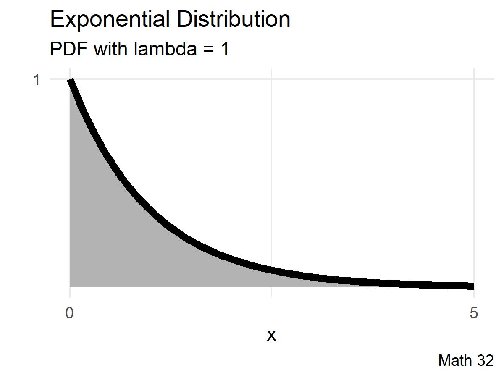
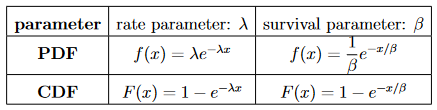
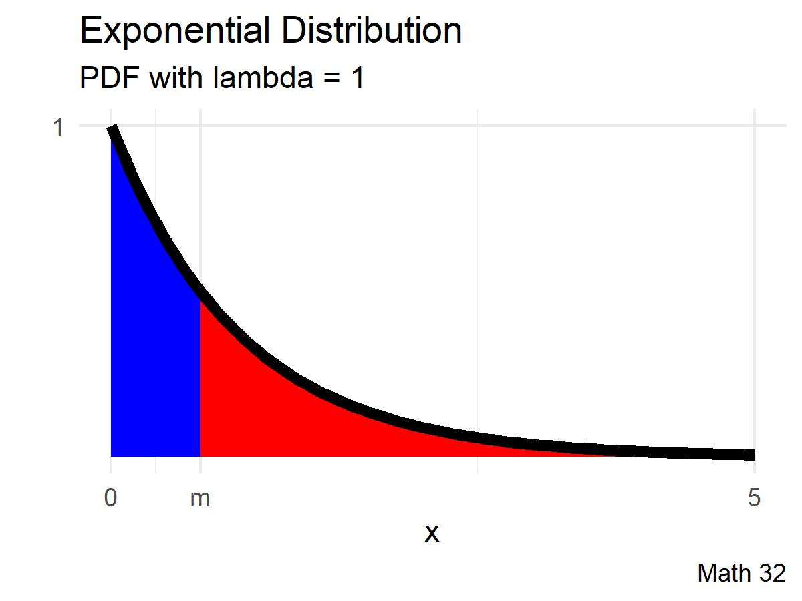
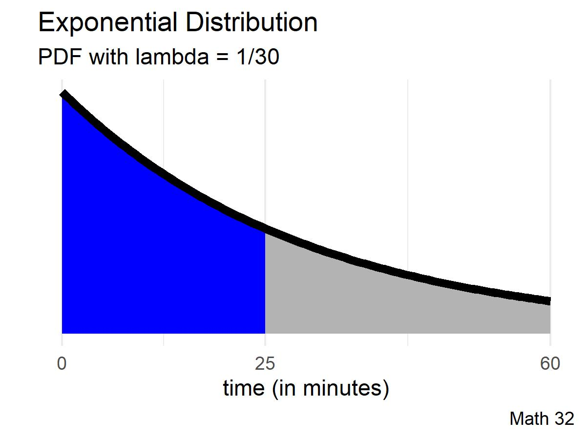
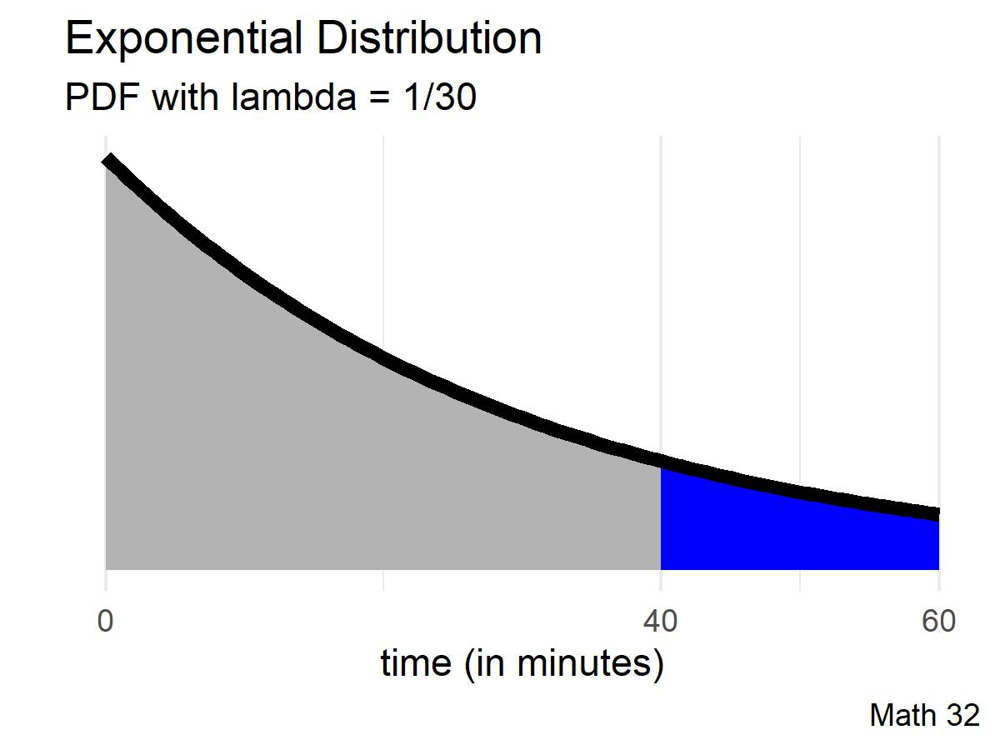
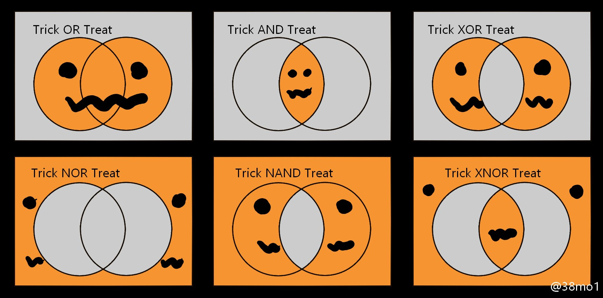

Inequalities
The inclusive versus exclusive variation in inequalities matter in discrete probability distributions. With a random variable \(X\) defined over a support of \(k = \{0, 1, 2, 3, ... \}\) number of trials,
\[P(X < k) = \displaystyle\sum_{i=0}^{k-1} P(i), \quad P(X \leq k) = \displaystyle\sum_{i=0}^{k} P(i)\]
\[P(X < 32) = P(k = 0) + P(k = 1) + \cdots + P(k = 31)\]
\[P(X \leq 32) = P(k = 0) + P(k = 1) + \cdots + P(k = 31) + P(k = 32)\]
The inclusive versus exclusive variation in inequalities do not matter with continuous probability distributions.
Claim: For a random variable \(X\) with probability density function \(f\), \[P(X < b) = P(X \leq b)\]
Motivation
There are many situations that are better modeled with an open set \([a, \infty)\) of support, so we can look at the mother function
\[f(x) = e^{-x}, \quad a < x\]
which has a horizontal asymptote. Next, a rate parameter \(\lambda\) (“lambda”) gives flexibility in models (i.e. the number we plug in for \(\lambda\) depends on the word problem).
\[f(x) = e^{-\lambda x}, \quad a < x\]

Normalization
Without much loss of generality, we can shift to a support of \([0, \infty)\). Our next goal is to rescale the function values so that the area under the curve is equal to 100 percent.
- Find the value of \(k\) so that \(f\) is a probability density function.
Probability Density Function
Having found the value of the scalar \(k\), our probability density function (PDF) is
\[\text{PDF: } f(x) = \begin{cases} \lambda e^{-\lambda x}, & x > 0 \\ 0, & \text{otherwise} \end{cases}\]
Cumulative Distribution Function
To continue to think of probabilities as area under a curve, we derive the cumulative distribution function (CDF) as the integral of the probability density function
\[F(x) = \displaystyle\int_{-\infty}^{x} \! f(t) \, dt = \displaystyle\int_{0}^{x} \! \lambda e^{-\lambda t} \, dt = 1 - e^{-\lambda x}, \quad x > 0\]
That is, the CDF of an exponential distribution is
\[F(x) = \begin{cases} 1 - e^{-\lambda x}, & x > 0 \\ 0, & x < 0 \end{cases}\]
\[~\]
The properties of probability include
- We start with zero probability \[\displaystyle\lim_{x \to -\infty} F(x) = 0\]
- We end with all probability \[\displaystyle\lim_{x \to \infty} F(x) = 1\]
Conventions

The models are related with \(\lambda = \displaystyle\frac{1}{\beta}\). Here in Math 32, we will use the model with the rate parameter \(\lambda\) (lambda) to match the convention used by the R programming language
Sample Statistics
Recall that the mean and the expected value are synonymous.
\[\mu = \text{E}[{\color{blue}X}] = \displaystyle\int_{-\infty}^{\infty} \! {\color{blue}x} \cdot f(x) \, dx = \lambda\displaystyle\int_{0}^{\infty} \! {\color{blue}x} \cdot e^{-\lambda x}\, dx = \displaystyle\frac{1}{\lambda}\]
We have shown that the expected value for \(X \sim Exp(\lambda)\) is \(\text{E}[X] = \displaystyle\frac{1}{\lambda}\).
Further analogues to the formulas used for discrete probability distributions include the the second moment
\[\text{E}[{\color{blue}X^{2}}] = \displaystyle\int_{-\infty}^{\infty} \! {\color{blue}x^{2}} \cdot f(x) \, dx = \lambda\displaystyle\int_{0}^{\infty} \! {\color{blue}x^{2}} \cdot e^{-\lambda x}\, dx = \displaystyle\frac{2}{\lambda^{2}}\]
and it follows that the variance for an exponential distribution with rate parameter \(\lambda\) is
\[\sigma^{2} = \text{Var}(X) = \text{E}[X^{2}] - \left(\text{E}[X]\right)^{2} = \displaystyle\frac{2}{\lambda^{2}} - \left(\displaystyle\frac{1}{\lambda}\right)^{2} = \displaystyle\frac{1}{\lambda^{2}}\]
As usual, the standard deviation is the square root of the variance.
\[\sigma = \sqrt{ \displaystyle\frac{1}{\lambda^{2}} } = \displaystyle\frac{1}{\lambda}\]
Back in discrete data, if we had an ordered list of data, \[\{ x_{(1)}, x_{(2)}, x_{(3)}, ...\}\] we said that the median is the value in the ``middle’’ of the list.
Query: How do you think we define a median here in the setting of continuous distributions?
Back in discrete data, if we had an ordered list of data, \[\{ x_{(1)}, x_{(2)}, x_{(3)}, ...\}\] we said that the median is the value in the ``middle’’ of the list.

Waiting Times
Let us now return to the notion of waiting times. Suppose that a friend of yours is going to pick you up for a carpool, and you estimate that he tends to arrive with a mean time of 30 minutes. Assume an exponential distribution.
\[\text{Since } \mu = \displaystyle\frac{1}{\lambda} \quad\Rightarrow\quad 30 = \displaystyle\frac{1}{\lambda} \quad\Rightarrow\quad \lambda = \displaystyle\frac{1}{30}\]
Compute the probability that your friend will arrive in less than 25 minutes.

Compute the probability that your friend will take more than 40 minutes to arrive.


Memoryless Property
You inherit an exquisite cabin in the woods, but on one condition: you must stay in the cabin overnight on the witch’s sabbath—Halloween. The cabin is notorious for housing the ghost of Cal Kulas, and he strikes sometime after the stroke of midnight with a mean time of 60 minutes.
- Given that you have already waited 32 minutes to see the ghost, what is the probability that you will have to wait at least another 10 minutes?
- Given that you have already waited 181 minutes to see the ghost, what is the probability that you will have to wait at least another 10 minutes?
Claim: An exponential distribution has the memoryless property \[P(T > a + b | T > b) = P(T > a)\]
Proof:
\[\begin{array}{rcl} P(T > a + b | T > b) & = & \displaystyle\frac{ P(T > a + b \text{ and } T > b) }{ P(T > b) } \\ ~ & = & \displaystyle\frac{ P(T > a+b) }{ P(T > b) } \\ ~ & = & \displaystyle\frac{ e^{-\lambda(a+b)} }{ e^{-\lambda b} } \\ ~ & = & e^{-\lambda a} \\ ~ & = & P(T > a) \\ \end{array}\]
Claim: The exponential distribution is the only continuous distribution with the memoryless property.
Proof: (See Math 181)
Looking Ahead
- due soon
- WHW6
- JHW4
- Mid-Semester Survey
- Be mindful of before-lecture quizzes
Exam 1 will be on Wed., Mar. 1
- more information in weekly announcements
No lecture session for Math 32:
- Mar 10, Mar 24
